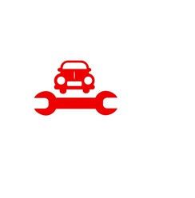

MOTOR NEPAL
MOTOR NEPAL
Motor Service in NepalThe motor sales department and service both go hand in hand. Service sector in automobile refers to the availability of parts and proper technicians to look after the condition of vehicles, maintain and repair. All the distributors that import vehicles into the country have their own service centers. Dealerships for service centers are also provided so that costumers get relaible service anywhere within the map of Nepal. The distributors are also responsible for importing of various parts of their respective vehicles which are again distributed to various dealers. The service centers are established with the mission to provide reliable service with genuine parts so that costumer are satisfied and retained. Such service centers have experienced engineers and trained technicians to look after every problem a certain brand vehicle might face. Along with the authorized service centers there are numbers of local service centers available for repair and maintainance of vehicles. This service centers are specially opened for profit purpose rather than quality service. The number of local service centers are more than that of authorized service centers. Not only service centers but local parts are also available in Nepal's market. Due to services in the automobile industry of Nepal, the field is getting competitive and moving forward gradually. |